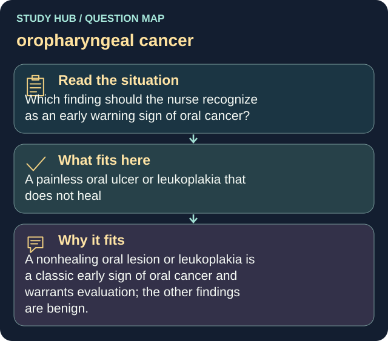

Which finding should the nurse recognize as an early warning sign of oral cancer?
Answer
A painless oral ulcer or leukoplakia that does not heal
Reasoning
A nonhealing oral lesion or leukoplakia is a classic early sign of oral cancer and warrants evaluation; the other findings are benign.
Why the other answers do not fit
- Bright red gums after flossing
- Temporary tongue soreness after eating citrus
- Occasional morning bad breath
Shared reasoning for choices without a separate note: A nonhealing oral lesion or leukoplakia is a classic early sign of oral cancer and warrants evaluation; the other findings are benign.
